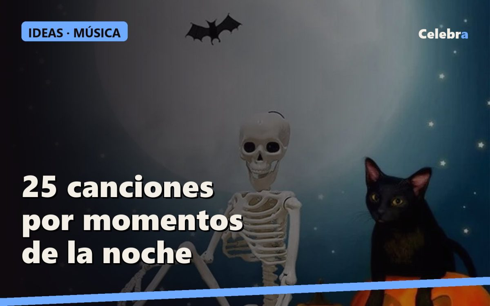

La música de Halloween: 25 canciones para la fiesta, de la entrada al susto final

La música decide el ambiente antes que la decoración. Esta es la lista que usamos, ordenada por momentos: llegada, fiesta, sustos y cierre. Búscala en tu aplicación de música por título y artista y guárdala como lista.
Llegada (ambiente, volumen bajo)
- This Is Halloween · Danny Elfman (Pesadilla antes de Navidad)
- Ghostbusters · Ray Parker Jr.
- Somebody's Watching Me · Rockwell
- Spooky Scary Skeletons · Andrew Gold
- Monster Mash · Bobby "Boris" Pickett
- Season of the Witch · Donovan
Fiesta (volumen arriba)
- Thriller · Michael Jackson (obligatoria; la coreografía la sabe medio salón)
- Disturbia · Rihanna
- Highway to Hell · AC/DC
- Zombie · The Cranberries
- Bad Moon Rising · Creedence Clearwater Revival
- Time Warp · The Rocky Horror Picture Show
- I Put a Spell on You · Screamin' Jay Hawkins (o la versión de la película Hocus Pocus)
- Heads Will Roll · Yeah Yeah Yeahs
- Bury a Friend · Billie Eilish
- Psycho Killer · Talking Heads
Sustos (para la casa encantada o el juego a oscuras)
- Tubular Bells · Mike Oldfield (el tema de El exorcista)
- Halloween Theme · John Carpenter
- Tema de Psicosis · Bernard Herrmann
- Stranger Things Theme · Kyle Dixon y Michael Stein
- Danza macabra · Camille Saint-Saëns (para el momento esqueleto)
Cierre de la noche
- Ghost Town · The Specials
- Superstition · Stevie Wonder
- Werewolves of London · Warren Zevon
- Dead Man's Party · Oingo Boingo
Si hay niños
Quedaos con la parte de "llegada" más Thriller, Ghostbusters y la banda sonora de Hotel Transilvania. Fuera la sección de sustos: a los niños les gusta el miedo de mentira, no el de verdad.
Tres trucos de sonido
- Un altavoz en la entrada con la lista de "llegada" a volumen bajo hace que la casa parezca más grande.
- Para la casa encantada del pasillo, la música de sustos en bucle en un móvil escondido detrás del esqueleto. Nadie mira ahí.
- Silencio de dos segundos antes del susto final. Funciona más que cualquier canción.